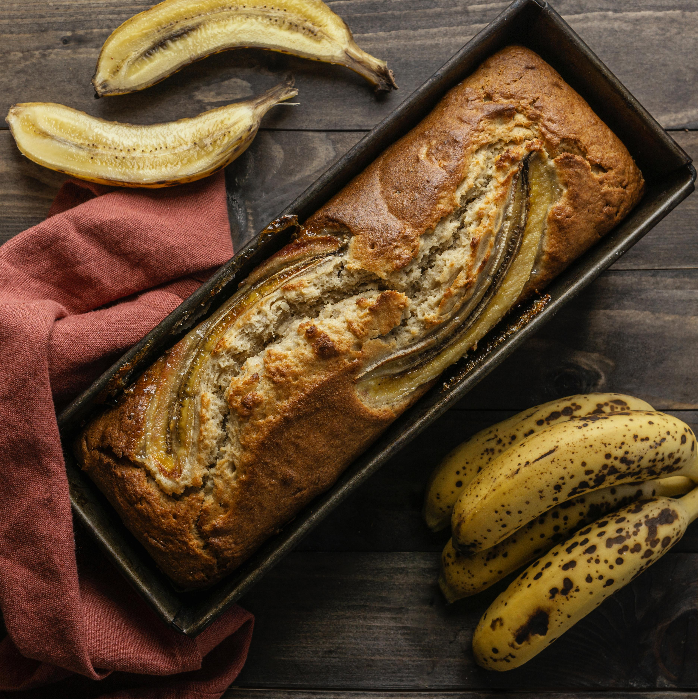

Banana Cake
Home

Description
Banana cake is one of the easiest and healthiest cakes to make.
With little ingredients making this delicious cake is a way to kill that eager to eat something sweet and delicious when u want to keep yourself healthy.
Ingredients
- 3 big ripe bananas
- 3 eggs
- Half cup of sugar
- 1 spoonfull of lemon juice
- 1 and a half cup of oat flour
- 1 spoonfull of baking powder
Steps
- Smash the bananas
- Mix it with the eggs
- Mix the sugar
- Add the lemon juice
- Add and mix the oat flour
- Add and mix the baking powder
- Add the dought into a ovenpan and put it in the oven
- Let it bake for 30 minutes